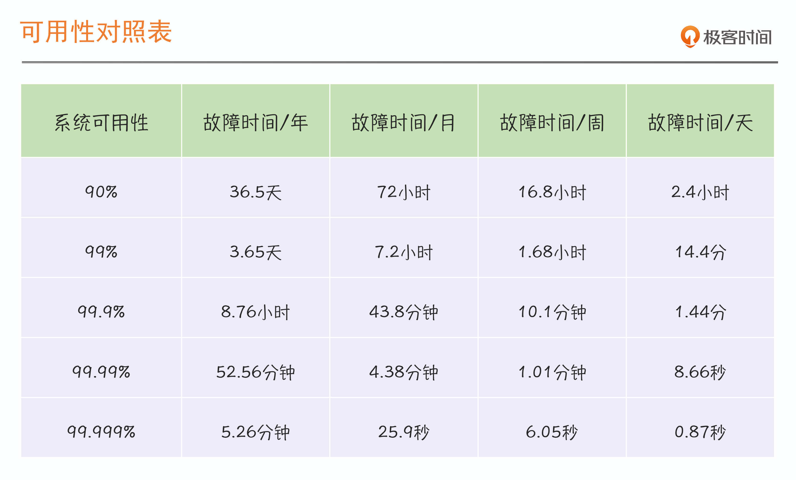

- 00 开篇词 SRE是解决系统稳定性问题的灵丹妙药吗？.md.html
- 01 SRE迷思：无所不能的角色？还是运维的升级？.md.html
- 02 系统可用性：没有故障，系统就一定是稳定的吗？.md.html
- 03 SRE切入点：选择SLI，设定SLO.md.html
- 04 错误预算：达成稳定性目标的共识机制.md.html
- 05 案例：落地SLO时还需要考虑哪些因素？.md.html
- 06 故障发现：如何建设On-Call机制？.md.html
- 07 故障处理：一切以恢复业务为最高优先级.md.html
- 08 故障复盘：黄金三问与判定三原则.md.html
- 09 案例：互联网典型的SRE组织架构是怎样的？.md.html
- 10 经验：都有哪些高效的SRE组织协作机制？.md.html
- 答疑 没什么能阻挡你拓展边界的渴望.md.html
- 结束语 聊聊我的SRE落地心路历程.md.html
- 捐赠
02 系统可用性：没有故障，系统就一定是稳定的吗？
你好，我是赵成，欢迎回来。
我们先来复习一下上一讲的内容，总结下来就是，SRE是个体系化工程，我们通过构建SRE这样一套体系来保证系统稳定性，具体来说就是“提升MTBF，降低MTTR”。有了这样一个激动人心的目标，你是不是想着那咱还等什么，赶快、立马就入手建设SRE体系吧！
嗯，好想法，我也很想咱就直接“撸起袖子加油干”。不过今天我们要先缓一缓，在正式进入SRE落地细节之前，我们得先讨论一下目前业界常用的“系统可用性（Availability）”这个概念，也就是我们常常听到的“3个9”（99.9%或99.95%）、“4个9”（99.99%或99.995%）。
为什么要先来讨论“系统可用性”这个大家已经很熟悉的概念呢？
一方面，系统可用性和我们建设SRE的目标强相关，SRE的稳定性目标其实就是尽量减少系统故障或异常运行状态的发生，提升系统可用的运行时间占比。很明显，这个可用时长就非常关键了。
另一方面，系统可用性这个概念看似简单，但我发现真的深入进去，大家的理解其实有很多不一致的地方，比如到底怎样才算是可用时长，怎样算是不可用时长呢？这个标准是怎么定义的？除了从时间维度来衡量可用性，还有其它的衡量方式吗？“3个9”、“4个9”听起来都很好，那具体来说我们的系统要达到“几个9”才算是稳定的呢？
所以，今天我们先慢下来，花时间把上面这些问题都彻底搞清楚，达成共识，打好基础，咱后面的SRE学习才能事半功倍。
衡量系统可用性的2种方式
那我就直接给答案了，目前业界有两种衡量系统可用性的方式，一个是时间维度，一个是请求维度，我们先来看这两个维度的计算公式。
- 时间维度：Availability = Uptime / (Uptime + Downtime)
- 请求维度：Availability = Successful request / Total request
这两个公式很简单，我们得深入进去，一一来看。
我们先来看时间维度的系统可用性。用一句话来概括：时长维度，是从故障角度出发对系统稳定性进行评估。
这类计算方式我们最常见，毕竟你的系统在一段时间里不出现故障，就说明它很稳定嘛！不过，在真实的使用场景中，怎么样才算是可用时长，什么情况下又是不可用时长，这个是怎么定义的呢？
细想一下这个问题，你会发现还真有点复杂，那我就举个发烧生病的例子来说明一下。
我们知道，一个人如果发烧了，体温一般会超过37.5度，那如果这个人的体温正好达到这个温度，是不是代表他一定是生病了呢？依据生活经验，我们知道不一定。为什么呢？因为我们判断一个人是否发烧生病，不是只看这一次、一时的体温，还要看他体温是不是持续超过37.5度。
所以，这里就涉及到一个测量方法和判定方法的问题，包含三个要素：一个是衡量指标，比如体温就是衡量指标；第二个是衡量目标，达到什么目标是正常，达不到就是异常，低于37.5度算正常，超过37.5度就是异常，但是单次测量不能说明问题，我们可以多次测量，比如6次中有至少4次低于37.5度才算正常，转化成比例的话就是67%；第三个是影响时长，比如持续超过12小时。
对应到系统上，我们也会用一系列的标准和判定逻辑来说明系统是否正常。比如，系统请求状态码为非5xx的比例，也就是请求成功率低于95%，已经连续超过10分钟，这时就要算作故障，那么10分钟就要纳入Downtime（宕机时间），如果达不到这个标准，就不算作故障，只是算作一般或偶然的异常问题。
这里同样有三个要素：衡量指标，系统请求状态码；衡量目标，非5xx占比，也就是成功率达到95%；影响时长，持续10分钟。
因此，只有当问题达到一定影响程度才会算作故障，这时才会计算不可用时长，也就是上面公式中的Downtime。同时，我们还要求一个周期内，允许的Downtime，或者说是系统的“生病时间”是有限的，用这个有限时间来约束系统稳定性。
下面是我们常见的按时长维度统计的可用性对照表，也就是我们前面提到的几个9：- - 讲到这里，针对时长维度的稳定性计算方式就比较清楚了，但是从这种计算方式中，你有没有看出一些问题呢？
我想你肯定看出来了，这里最显著的问题就是，稳定性只与故障发生挂钩。
我们来想一想，这样做会带来哪些问题？比如有一个系统，因为网络抖动，有短暂的几秒、十几秒，或者几分钟异常，但是后来系统自己恢复了，业务并没有中断，这时我们按照时长维度来判断，这肯定不会算作系统故障。但是如果这种短暂的影响频度非常高，一天来个5、6次，持续一两周，我们应该可以判定系统运行状况也是不正常的，可能不是故障，但肯定是不稳定了。
所以这种用时长维度来衡量系统稳定性的方式，其主要缺点就是粒度不够精细。这些小的异常问题和它们的影响，如果从更长的周期来看，也是有一定参考价值的。那怎样才能衡量得更精细些呢？
这就需要第二种衡量方式了，也就是从请求维度来衡量系统可用性。
用一句话来说，请求维度，是从成功请求占比的角度出发，对系统的稳定性进行评估。
假定我们的系统一天内有100,000次请求，我们期望的成功率至少是95%，如果有5001次请求失败了，也就是成功率低于95%了，我们就认为系统运行状态是不正常的。
请求维度的系统可用性同样包含三个关键要素，第一个衡量指标，请求成功率；第二个衡量目标，成功率达到95%才算系统运行正常；第三个是统计周期，比如一天、一周、一个月等等，我们是在一个统计周期内计算整体状况，而不是看单次的。
你看，这种方式对系统运行状况是否稳定监管得更为严格，不会漏掉任何一次问题的影响，因为它对系统整体运行的稳定性判定，不仅仅会通过单次的异常影响进行评估，还会累计叠加进行周期性的评估。
到这里，我们就总结出一条至关重要的经验了：故障一定意味着不稳定，但是不稳定，并不意味着一定有故障发生。
到这里，我们掌握了衡量系统可用性的两个维度、两种算法，它们都包含三个关键要素：衡量指标、衡量目标、影响时长/统计周期。这两种算法最后都会落脚到“几个9”上，那系统到底定“几个9”才算是稳定的呢？接下来，我们就来回答这个问题。
设定系统稳定性目标要考虑的3个因素
这个问题其实并没有标准答案，从我的经验来看，到底定“几个9”主要取决于以下三个因素。
第一个，成本因素。
从理论上来说，肯定是9越多稳定性越好，但是相应付出的成本和代价也会更高。比如为了更高的可用性，要有更多的冗余资源投入，甚至要做主备、双活甚至是多活。如果一家公司的业务量和影响力都发展到一定程度，那这个成本不管多高都是必须要付出的。但是，肯定不是所有的公司都需要付出这么高的成本，而是要先考虑ROI（回报率）。这时候就要看企业自身对成本压力的承担情况了。
第二个，业务容忍度。
稳定性怎么设定，很大程度上还要取决于业务上的容忍度。对于核心业务或核心应用，比如电商的交易和支付系统，我们当然是希望成功率越高越好，一般对系统稳定性要求是“3个9”或“4个9”。因为这些系统一旦出问题，就会直接影响整个网站和公司的收益，这些都是钱，所以对稳定性要求必然就会提高。
但是，对于非核心业务或应用，比如商品评论，商品评分等，或许“2个9”也能容忍。因为短时间的评论看不到，并不会对业务收入和用户体验造成太大的影响。
第三个，系统当前的稳定性状况。
结合系统的实际情况，定一个合理的标准比定一个更高的标准会更重要。这个合理的值应该怎么来定呢？
我个人的建议是从系统现状入手，比如，如果系统可用性是低于99%的，那首先第一步是不是可以做到99%，然后再争取做到99.5%，再到99.9%，一步一步朝着更高的标准迈进。同时，这样做也会更容易落地，因为你如果定一个太高的目标，又始终达不成，反而会打击到团队的自信心和积极性。
结合上面这三个因素，对于到底应该定“几个9”这个问题，你应该有了一个更清晰的认识了。
总结
好了，到这里，今天我们要讨论的系统可用性就讲完了。关于系统可用性，业界有两种计算方式，一种是时长维度，另一种是请求维度，这两种方式各有优劣。在SRE的实践中，应该选择哪一个呢？很明显，SRE会更多采用请求维度的统计方式，因为SRE关注的稳定性是系统的整体运行状态，而不仅仅只关注故障状态下的稳定性，在系统运行过程中的任何异常，都会被纳入稳定性的评估范畴中。
这个知识点要拿一整节课来讲，是因为接下来我们就要讨论SRE的稳定性指标和目标了，理解了今天的内容，你才能更好地理解SRE体系中的指标（SLI）和目标（SLO）。今天我先把SLI和SLO这两个概念抛出来，如果你觉得有点陌生，没有关系，准备好下节课和我一起掌握它们。
思考题
对于系统可用性的描述，今天我们仅用了“状态码”这一个指标来示例，但是在实际情况下，我们还会有其它多个指标来同时标识一个系统的稳定性，你能想到还有哪些指标？欢迎你在留言区写下自己的思考。
考虑这些指标的时候，不妨想想你是怎么选择的，你的判断标准是什么？这些也将是我们下节课程的重点内容。
如果今天的内容对你有帮助，也欢迎你分享给身边的朋友，和他一起精进。
我是赵成，我们下节课见。
© 2019 - 2023 Liangliang Lee. Powered by gin and hexo-theme-book.